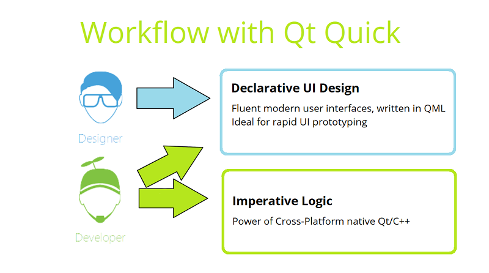

Introduction to QML
In Parts 1 and 2 we mainly worked on Qt essentials, which can be found in almost any Qt application, no matter how trivial or complicated the application is. We were discussing about the application logic, the engine implemenating the application behaviour. In addition to logic, however, we usually want to create a user interface to interact with the engine as well. Preferably a flashy, cool looking, fluid user interface that shoots lasers and plays disco music when the user interacts with it. Who doesn't love lasers and disco music?!
In Part 3 we are going to be talking about creating user interfaces using Qt Quick. The programming language we will be using is the declarative scripting language QML, which extends the JavaScript language. Although the application logic can be implemented in JavaScript, the preferred way is to use QML and JavaScript for declaring the UI components, layouts, and animations, while C++ should be used to implement the application logic. This is because performance will almost always be worse with logic implemented using JavaScript in comparison to C++.
We will return to the topic of interconnecting application logic written in C++ with QML in Part 5. In this part, we cover QML language only.
In Qt Creator, there exists a graphical UI design tool, called Qt Quick Designer. The UIs in the course can be composed by simply editing the QML code directly, but you can use Qt Quick Designer as well if you wish. Qt also provides Qt Design Studio, which is mainly targeted at designers. It allows UI designer to import graphic assets from Adobe Photoshop and further the SW developer to use the UI design, composed in Qt Design Studio. However, for the course exercises Qt Design Studio is little bit too overwhelming.
Qt Quick
Qt Quick is a module, consisting of all the basic types and functionality for QML. It includes visual types, interactive types, animations, models and views, particle effects and shader effects. A QML application developer can get access to all of that functionality by importing the corresponding QML modules. The modules are plugins, providing types for the QML engine. A trivial module may be just a folder, consisting of QML text files.
The Qt Quick QML library is provided by the Qt Quick module. For in-depth information about the various QML types and other functionality provided by Qt Quick, please see the Qt Quick module documentation.
When using the Qt Quick module, you will need to know how to write QML applications using the QML language.
Using the Qt Quick module, designers and developers can efficiently work with the same product development project, without long cycles, waiting designers to change or developers implement certain UI features. This can significantly reduce round-trip time between the designer and developer, reducing product time-to-market.
QML
QML stands for Qt Meta-Object Language, AKA Qt Modelling Language, and it's a user interface markup language.
The Qt QML module provides a framework for developing applications and libraries with the QML language. It defines and implements the language and engine infrastructure, and provides an API to enable application developers to extend the QML language with custom types and integrate QML code with JavaScript and C++. The Qt QML module provides both a QML API and a C++ API.
You'll want to work on your application logic using C++. It will in most cases result in better performance than implementing logic using JavaScript.
QML is a declarative language that allows user interfaces to be described in terms of their visual components and how they interact and relate with one another. It is a highly readable language that was designed to enable components to be interconnected in a dynamic manner, and it allows components to be easily reused and customized within a user interface. Using the Qt Quick module, designers and developers can easily build fluid animated user interfaces in QML, and have the option of connecting these user interfaces to any back-end C++ libraries.
With QML, UI components are declared with objects, object properties and property bindings, set to define the application behavior. It is possible to declare signals and signal/slot connections similarily to C++. Application behavior can be further scripted through JavaScript, which is a subset of the language. In addition, QML heavily uses Qt, which allows types and other Qt features to be accessible directly from QML applications. In fact, each JavaScript method in a QML type, also called as a component, is a public slot and can be connected to a signal.
.qml -files and QML syntax
QML is a multi-paradigm language that enables objects to be defined in terms of their attributes and how they relate and respond to changes in other objects. In contrast to purely imperative code, where changes in attributes and behavior are expressed through a series of statements that are processed step by step, QML's declarative syntax integrates attribute and behavioral changes directly into the definitions of individual objects. These attribute definitions can then include imperative code, in the case where complex custom application behavior is needed.
QML source code is generally loaded by the engine through QML (.qml) documents, which are standalone documents of QML code. These can be used to define QML object types that can then be reused throughout an application. A QML document, defining a new type, is also called a component.
Note that type names must begin with an uppercase letter in order to be declared as QML object types in a QML file.
Including QML in your projects
To include QML in your projects, you need to complete these three steps:
1. To include the definitions of the module's classes, use the following directive:
#include <QtQml>
2. The QML types in Qt QML are available through the QtQML import. To use the types, add the following import statement to your .qml file:
import QtQml 2.0
3. To link against the module, add this line to your qmake .pro file:
QT += qml
Imports
A QML document may have one or more imports at the top of the file. An import can be any one of:
- a versioned namespace into which types have been registered (e.g., by a plugin)
- a relative directory which contains type-definitions as QML documents
- a JavaScript file
JavaScript file imports must be qualified when imported, so that the properties and methods they provide can be accessed.
The generic form of the various imports are as follows:
import Namespace VersionMajor.VersionMinor
import Namespace VersionMajor.VersionMinor as SingletonTypeIdentifier
import "directory"
import "file.js" as ScriptIdentifier
Examples:
import QtQuick 2.0
import QtQuick.LocalStorage 2.0 as Database
import "../privateComponents"
import "somefile.js" as Script
Prototyping with Quick UI projects and qmlscene
To prototype user interfaces even more quickly, one can create a Qt Quick UI project. These projects do not contain any C++ code, resource .qrc or deployment code (qmake files). This way the potential designer can launch the application without compiling any code or developer can quickly share proof-of-concepts. For example in Qt Design Studio, it is possible to create Qt Quick UI projects only. The QML Scene can be executed also remotely in a mobile or embedded device and any change in UI editor will be reflected in the UI immediately. Qt Quick Designer does not have similar feature.
One can also enable a keyboard shortcut for the prototyping application qmlscene, which renders any arbitary .qml files. qmlscene can be enabled in Qt Creator by going to Options -> Environment -> Keyboard -> search for qmlscene -> assign shortcut. When a .qml file is open in the Edit or Design mode, hit the shortcut to render the file.
Internationalization
Qt Quick has extensive internationalization and localization support.
Let's go through the basic process here:
Text {
id: txt1;
text: qsTr("Back");
}
Use the function qsTr() to declare translatable strings inside the UI. This makes "Back" a key entry in the translation files.
Text {
id: txt1;
// This user interface string is used only here
//: The back of the object, not the front
//~ Context Not related to back-stepping
text: qsTr("Back", "not front");
}
You can add context for the translator by a comment line starting with //: and optionally //~. The former is the main comment for the translator, and the latter is optional extra information.
Sometimes the same word has different meanings in different contexts. Differentiate between them by adding the second parameter to qsTr(), which then gives the word an unique id in the translation files.
Text {
text: qsTr("File %1 of %2").arg(counter).arg(total)
}
Since the sentence structure between languages varies, avoid concatenating words and data. Instead, use % to insert parameters into the strings. This way the translator can change the locations of the parameters in the sentences.
You can include the L modifier when you specify a parameter, e.g. %L1, to localize a number according to the current regional settings. This would format the number 1337.42 as "1,337.42" in the US and "1.337,42" in German, for example.
For more thorough information about internationalization, check out the official documentation about Internationalization and Localization with Qt Quick and Qt Linguist Manger
Oh my, it's a second Hello World in the same course. This time things get graphical. We'll start off simple, just head to HelloWorld.qml and write some text inside a rectangle.
QML Types and Properties
In the beginning of this chapter we're taking a general look into QML Types and the structure of the code. After that, we'll discuss QML object attributes and properties.
QML Types and Structure
QML types are structures in the markup language, and they represent visual and non-visual parts. Non-visual QML types include functionality, such as states, transitions, models, paths, gradients and timers.
All visual items in Qt Quick inherit from Item, but it's not itself visual. Using Item as the top-level QML object (as the root item of your component) will not produce a visual result. If you wish your top-level QML object to produce a visual result, you can use another type such as Rectangle or Image instead.
Note that even though Item is good as a root object for your own components, in the application's main.qml you'll usually want to use Window or one of its sub-types as the root. When creating a new QML project with the Qt Creator wizard, a Window object is created automatically to main.qml.
Although an Item object has no visual appearance, it defines all the attributes that are common across visual items, such as x and y position, width and height, anchoring and key focus handling. It supports layering and is usually used to group visual types. Use the Item to create opacity effects, such as when creating an invisible container to hold other components.
The Item type is useful for grouping several items under a single root visual item. For example:
import QtQuick 2.0
Item {
id: root
Text {
text: "Hello There!"
color: black
}
Image {
id: imageOne
x: 80
width: 100
height: 100
source: "tile.png"
}
Image {
id: imageTwo
x: 190
width: 100
height: 100
fillMode: Image.Tile
source: "tile.png"
}
}
Please note that we are only using "magic numbers" in the examples for clarity's sake. In general, you should try to bind x, y, width and height to the parent, or another item, such as the root item of the component. How to do this will be explained shortly.
QML Object tree
Syntactically, a block of QML code defines a tree of QML objects to be created. Objects are defined using object declarations that describe the type of object to be created as well as the attributes that are to be given to the object. Any object declaration can define child objects through nested object declarations. In this way, any object declaration implicitly declares an object tree that may contain any number of child objects.
For example, the Rectangle object declaration below includes a Gradient object declaration, which in turn contains two GradientStop declarations:
import QtQuick 2.0
Rectangle {
width: 100
height: 100
gradient: Gradient {
GradientStop { position: 0.0; color: "yellow" }
GradientStop { position: 1.0; color: "green" }
}
}
Note, however, that this is a parent-child relationship in the context of the QML object tree, not in the context of the visual scene. The concept of a parent-child relationship in a visual scene is provided by the Item type from the QtQuick module, which is the base type for most QML types, as most QML objects are intended to be visually rendered. We we will discuss visual parent-child relationship next.
Visual Parents and Children
The QObject parent-child relationship was discussed in Part 2. Now we will be taking a look at visual parents and children, as it's important to understand how the concept differs. An item's visual parent may not necessarily be the same as its object parent. The concept of the visual parent in Qt Quick is separate from, but related to, the concept of the object parent within the QObject parent hierarchy.
All QML objects have an object parent, which is determined by the object hierarchy in which the object is declared. When working with the QtQuick module, the Item type is the base type for all visual items provided by this module, and it provides the concept of an additional visual parent, as defined by an item's parent property. Every item has a visual parent; if an item's parent property value is null, the item will not be rendered in the scene.
Any object assigned to an item's data property becomes a child of the item within its QObject hierarchy, for memory management purposes. Additionally, if an object added to the data property is of the Item type, it is also assigned to the Item::children property and becomes a child of the item within the visual scene hierarchy. (Most Qt Quick hierarchy crawling algorithms, especially the rendering algorithms, only consider the visual parent hierarchy.)
For convenience, the Item data property is its default property. This means that any child item declared within an Item object without being assigned to a specific property is automatically assigned to the data property and becomes a child of the item as described above. So, the two code blocks below produce the same result, and you will almost always see the form shown below:
import QtQuick 2.0
Item {
width: 100; height: 100
Rectangle {
width: 50;
height: 50;
color: "red"
}
}
Rather than the explicit data assignment:
import QtQuick 2.0
Item {
width: 100; height: 100
data: [
Rectangle {
width: 50;
height: 50;
color: "red"
}
]
}
An item's visual parent can be changed at any time by setting its parent property. Thus, an item's visual parent may not necessarily be the same as its object parent.
When an item becomes the child of another item:
- The child's parent refers to its parent item
- The parent's
childrenandchildrenRectproperties take that child into account
Declaring an item as a child of another does not automatically mean that the child item will be appropriately positioned or sized to fit within its parent. Some QML types may have in-built behaviors that affect the positioning of child items — for example, a Row object automatically re-positions its children into a horizontal formation — but these are behaviors enforced by the types' own specific implementations. Additionally, a parent item will not automatically clip its children to visually contain them within the parent's visual bounds, unless its clip property is set to true.
QML Object Attributes and Properties
Every QML object type has a defined set of attributes. Each instance of an object type is created with the set of attributes that have been defined for that object type.
A property is an attribute of an object that can be assigned a static value or bound to a dynamic JavaScript expression or even a code block. A property's value can be read by other objects according to property visibility scope rules. Generally it can also be modified by another object, unless a particular QML type has explicitly disallowed this for a specific property.
A property may be defined for a type in C++ by registering a Q_PROPERTY of a class which is then registered with the QML type system. We discussed these QObject properties in the last part. Alternatively, a custom or dynamic property of an object type may be defined in an object declaration in a QML document or component with the following syntax:
[default] property <propertyType> <propertyName>
In this way an object declaration may expose a particular value to outside objects or maintain some internal state more easily.
Grouped Properties
In some cases properties contain a logical group of sub-property attributes. These sub-property attributes can be assigned to using either the dot notation or group notation.
For example, the Text type has a font group property. Below, the first Text object initializes its font values using dot notation, while the second uses group notation:
Text {
//dot notation
font.pixelSize: 12
font.b: true
}
Text {
//group notation
font { pixelSize: 12; b: true }
}
The id Property
The id property is a special property used to identify QML objects. It is used to create relationships between objects. The id property of an object allows other objects refer to it in regard to:
- Relative realignment and positioning
- To use its properties
- To change its properties (e.g. for animation)
- For re-use of common types (e.g. gradients, images).
For example:
Item {
width: 300; height: 115
Text {
id: title
x: 50; y: 25
text: "Qt Quick"
font { family: "Helvetica"; pointSize: parent.width * 0.1 }
}
Rectangle {
x: title.x; y: title.y + title.height - height; height: 5
width: title.width
color: "green"
}
}
Scope
Each QML component defines a logical scope. Each document has at least one root component, but can have other inline sub-components. The component scope is the union of the object ids within the component and the component's root object's properties.
Item {
property string title
Text {
id: titletype
text: "<b>" + title + "</b>"
font.pixelSize: 22
anchors.top: parent.top
}
Text {
text: titletype.text
font.pixelSize: 18
anchors.bottom: parent.bottom
}
}
The example above shows a simple QML component that displays a rich text title string at the top, and a smaller copy of the same text at the bottom. The first Text type directly accesses the component's title property when forming the text to display. This makes it easy to distribute data throughout the component. The second Text type uses an id to access the first's text directly.
Component instances connect their component scopes together to form a scope hierarchy. Component instances can directly access the component scopes of their ancestors. This dynamic scoping allows us to do things like:
// TitlePage.qml
import QtQuick 2.0
Item {
property string title
TitleText {
size: 22
anchors.top: parent.top
}
TitleText {
size: 18
anchors.bottom: parent.bottom
}
}
// TitleText.qml
import QtQuick 2.0
Text {
property int size
text: "<b>" + title + "</b>"
font.pixelSize: size
}
Where the TitleText has access to TitlePage's title property when used from within the TitlePage even though they exist in different files. Used somewhere else, the title property could resolve differently.
Some special attention needs to be given when considering the scope of attached properties. We'll talk about this with Attached Properties in general.
Signal Handlers
Many QML types provide signals you can catch, for example MouseArea has signals onPressed and onReleased, among others.
QML types also provide built-in property change signals that are emitted whenever a property value changes. These signals take the form on<Property>Changed where <Property> is the name of the property with the first letter capitalized. These documentation of the types usually don't have these signals listed, because they are implicitly available throught the fact that the type has a property.
We'll talk about implementing your own custom signals in QML later in Part 3.
Signal handlers are a special sort of method attribute, where the method implementation is invoked by the QML engine whenever teh associated signal is emitted. For example:
TextInput {
text: "Change this!"
onTextChanged: console.log("Text has changed to:" text)
}
Attached Properties and Attached Signal Handlers
Attached properties and attached signal handlers are mechanisms that enable objects to be annotated with extra properties or signal handlers that are otherwise unavailable to the object. In particular, they allow objects to access properties or signals that are specifically relevant to the individual object.
References to attached properties and handlers take the following syntax form:
<AttachingType>.<propertyName>
<AttachingType>.on<SignalName>
For example, the ListView type has an attached property ListView.isCurrentItem that is available to each delegate object in a ListView. This can be used by each individual delegate object to determine whether it is the currently selected item in the view:
import QtQuick 2.0
ListView {
width: 240; height: 320
model: 3
delegate: Rectangle {
width: 100; height: 30
color: ListView.isCurrentItem ? "red" : "yellow"
}
}
In this case, the name of the attaching type is ListView and the property in question is isCurrentItem, hence the attached property is referred to as ListView.isCurrentItem.
An attached signal handler is referred to in the same way. For example, the Component.onCompleted attached signal handler is commonly used to execute some JavaScript code when a component's creation process has been completed. In the example below, once the ListModel has been fully created, its Component.onCompleted signal handler will automatically be invoked to populate the model:
import QtQuick 2.0
ListView {
width: 240; height: 320
model: ListModel {
id: listModel
Component.onCompleted: {
for (var i = 0; i < 10; i++)
listModel.append({"Name": "Item " + i})
}
}
delegate: Text { text: index }
}
Since the name of the attaching type is Component and that type has a completed signal, the attached signal handler is referred to as Component.onCompleted.
A Note About Scope
A common error is to assume that attached properties and signal handlers are directly accessible from the children of the object to which these attributes have been attached. This is not the case. The instance of the attaching type is only attached to specific objects, not to the object and all of its children.
For example, below is a modified version of the earlier example involving attached properties. This time, the delegate is an Item and the colored Rectangle is a child of that item:
import QtQuick 2.0
ListView {
width: 240; height: 320
model: 3
delegate: Item {
width: 100; height: 30
Rectangle {
width: 100; height: 30
color: ListView.isCurrentItem ? "red" : "yellow" // WRONG! This won't work.
}
}
}
This does not work as expected because ListView.isCurrentItem is attached only to the root delegate object, and not its children. Since the Rectangle is a child of the delegate, rather than being the delegate itself, it cannot access the isCurrentItem attached property as ListView.isCurrentItem. So instead, the rectangle should access isCurrentItem through the root delegate:
ListView {
//....
delegate: Item {
id: delegateItem
width: 100; height: 30
Rectangle {
width: 100; height: 30
color: delegateItem.ListView.isCurrentItem ? "red" : "yellow" // correct
}
}
}
Now delegateItem.ListView.isCurrentItem correctly refers to the isCurrentItem attached property of the delegate.
Property Bindings
As we just mentioned, an object's property can be assigned a static value which stays constant until explicitly assigned a new value. However, to make the fullest use of QML and its built-in support for dynamic objecct behaviours, most QML objects use property bindings. Property bindings are a core feature of QML that lets developers specify relationships between different object properties. When property's dependencies change in value, the property is automatically updated according to the specified relationship.
Behind the scenes, the QML engine monitors the property's dependencies (that is, the variables in the binding expression). When a change is detected, the QML engine re-evaluates the binding expression and applies the new result to the property.
To create a property binding, a property is assigned a JavaScript expression that evaluates to the desired value. At its simplest, a binding may be a reference to another property. Take the following example, where the blue Rectangle's height is bound to the height of its parent:
Rectangle {
width: 200; height: 200
Rectangle {
width: 100
height: parent.height
color: "blue"
}
}
Whenever the height of the parent changes, the height of the rectangle automatically updates to the same value.
A binding can contain any valid JavaScript expression or statement. Bindings can access object properties, call methods, and use built-in JavaScript objects such as Date or Math. A bit more complex example would bind an objects color to the length of a text in another object.
color: myTextInput.text.length <= 10 ? "red" : "blue"
Here the object's color changes from blue to red when an other object's (with id myTextInput) text becomes longer than 10 characters.
It is important to note that while a bound property's value updates automatically, the binding will be removed if it's later assigned a static value by the JavaScript statement. This is a common source for troubles, especially for beginners! For example:
import QtQuick 2.0
Rectangle {
width: 100
height: width * 2
focus: true
Keys.onSpacePressed: {
height = width * 3
}
}
Here, the Rectangle initially ensures that its height is always twice its width. However, when the space key is pressed, the current value of width*3 will be assigned to height as a static value. After that, the height will remain fixed at this value, even if the width changes. The assignment of the static value removes the binding.
This can be desirable behavious in many cases. If the intention is to give the rectangle a fixed height and stop automatic updates, the code does exactly that. However, if the intention is to establish a new relationship between width and height, then the new binding expression must be wrapped in the Qt.binding() function instead:
import QtQuick 2.0
Rectangle {
width: 100
height: width * 2
focus: true
Keys.onSpacePressed: {
height = Qt.binding(function() { return width * 3 })
}
}
This chapter was really theory-heavy, since we cannot really do much yet, but it's going to be really useful to have an understanding about the property system later on.
This exercise awards no points, but you are recommended to download and check it out anyway. PropertyBinding.qml showcases what happens when you don't use Qt.binding(). Run both scenarios to make sure you get the concept. We also recommend you use this template to test out other things mentioned in this chapter, it will be useful later on.
Basic QML Types
Qt Object
Qt QML type provides a global object with useful enums and functions from Qt. It is not instantiable; to use it, call the members of the global Qt object directly. For example:
import QtQuick 2.0
Text {
color: Qt.rgba(1, 0, 0, 1)
text: Qt.md5("hello, world")
}
See the documentation for Qt QML Type too see all the things it provides.
Rectangle
Rectangle items are used to fill areas with solid color or gradients, and/or to provide a rectangular border.
Each Rectangle item is painted using either a solid fill color, specified using the color property, or a gradient, defined using a Gradient type and set using the gradient property. If both a color and a gradient are specified, the gradient is used.
You can add an optional border to a rectangle with its own color and thickness by setting the border.color and border.width properties. Set the color to "transparent" to paint a border without a fill color.
You can also create rounded rectangles using the radius property. Since this introduces curved edges to the corners of a rectangle, it may be appropriate to set the Item::antialiasing property to improve its appearance.
If you need random shapes instead of rectangles, look into the Shape type. We'll discuss Shape in chapter 3.11.
For example:
import QtQuick 2.0
Rectangle {
width: 100
height: 100
color: "red"
border.color: "black"
border.width: 5
radius: 10
}
Image
Image type displays an image from an URL specified in the source property. Image type can handle Qt supported URLs and image types (PNG, JPEG, SVG, ...).
The source image can naturally be smaller or bigger than the Image item. With the fillMode property, you can choose the strategy used when painting the image inside the item.
By default, images are loaded from network resources asynchronously in a separate thread. This way slow networks won't block the UI. Local files are loaded synchronously by default, and this can be overridden by setting the asynchronous property to true. Asynchronous loading is beneficial if there are big files that are not needed be displayed right away in the UI.
To monitor the state of an image, Image has progress and status properties. They can be bound to visualizations in the UI, for example.
When using images with QML, they are often the greatest user of memory in the UI. To minimize memory usage of images that are not part of UI (like user provided resources), they should have their size bounded with the sourceSize property. sourceSize dictates the actual width and height of the loaded image, while the width and height properties hold the dimensions where the image will be scaled to.
import QtQuick 2.0
Image {
id: bigImage
anchors.fill: parent
asynchronous: true
onStatusChanged: {
if (bigImage.status == Image.Ready) console.log("Image loaded")
}
source: "bigImage.jpg"
sourceSize.width: 1024
sourceSize.height: 1024
}
Image data is cached and shared internally, so when using the same source the objects will use the same data.
BorderImage
The BorderImage type is used to form a border out of parts of an image by scaling or tiling.
BorderImage divides the source image into 9 regions like this:

The regions are defined with the border property group. Regions formed from the source image are scaled or tiled to create the displayed border image in the following way:
- The corners (regions 1, 3, 7, and 9) are not scaled at all.
- Regions 2 and 8 are scaled according to
horizontalTileMode. - Regions 4 and 6 are scaled according to
verticalTileMode. - The middle (region 5) is scaled according to both
horizontalTileModeandverticalTileMode.
If the TileMode is set to Stretch, the parts of the image are stretched vertically/horizontally if needed. If it's set to Repeat the parts of the image are instead repeated. When the width/height of the border regions 2, 4, 6, 8 cannot be repeated in exact multiples of the target width/height, the tilemode BorderImage.Round can be used to scale the regions to fit in the target.
BorderImage {
width: 180; height: 180
border { left: 30; top: 30; right: 30; bottom: 30 }
horizontalTileMode: BorderImage.Repeat
verticalTileMode: BorderImage.Repeat
source: "pics/borderframe.png"
}
Text
Text type can display plain or rich text (using HTML markup). To have user editable text you can use TextEdit), which is very similar toText type.
import QtQuick 2.0
Text {
text: "Hello <b>World</b>!"
font.family: "Helvetica"
font.pointSize: 24
color: "red"
}
If the height and width are not explicitly set, Text will try to accomodate the dimensions to the text. Generally explicitly setting the size is suboptimal because it causes a layout recalculcation, so set it only if you need to.
To enable text wrapping, wrapMode needs to be set, otherwise the text will laid on one line.
To customize the font, the properties in group font can be changed:
- font.family choose the family of the font
- font.pointSize sets the font size in device independent points
- font.pixelSize sets the font size pixels
To style the text, the property style can be used to change the style to either Raised, Outline or Sunken. Use styleColor to change the color of the added styling
Row {
Text { font.pointSize: 24; text: "Normal" }
Text { font.pointSize: 24; text: "Raised"; style: Text.Raised; styleColor: "#AAAAAA" }
Text { font.pointSize: 24; text: "Outline";style: Text.Outline; styleColor: "green" }
Text { font.pointSize: 24; text: "Sunken"; style: Text.Sunken; styleColor: "#AAAAAA" }
}
To scale text with other items, you can:
- bind the
font.pixelSizeproperty to any item geometry - set the
fontSizeModeto scale the text size
Rectangle {
width: 400
height: 400
color: "lightblue"
Text {
x: parent.width * 0.25
y: parent.height * 0.25
text: "Qt Quick"
font {
family: "Sans"
pixelSize: parent.width * 0.1
}
}
}
You can also use FontMetrics to get the geometry of a certain font:
Rectangle {
FontMetrics {
id: metrics
font.pointSize: 20
font.family: "Courier"
}
width: 200
height: metrics.height * 10
}
In this exercise you will modify the file PictureFrame.qml to create a nice frame for a cute cat. Exercise instructions are in the same file.
Text Input and Key Handling
Focus
In order for an object to receive keyboard events, it needs to have active focus. In this chapter we're focusing on text input, but any item can have focus and thus respond to input, let it be from the keyboard or somewhere else.
In the most simple case, where we only have one Item in need of focus, this can be done by simply setting the focus property to true. For example:
Rectangle {
color: "lightsteelblue"; width: 240; height: 25
Text { id: myText }
Item {
id: keyHandler
focus: true
Keys.onPressed: {
if (event.key == Qt.Key_A)
myText.text = 'Key A was pressed'
else
myText.text = 'Key other than A was pressed'
}
}
}
However, setting the focus property doesn't itself quarantee that the object will have active focus, but that it can receive it. When the application grows, there will most certainly be multiple objects wanting active focus, and just setting the focus property is no longer enough. If there are multiple objects requesting focus it will be granted to the last one created.
There are a few ways to solve this probelm. In the case of TextInput, for example, the property activeFocusOnPress is set to true by default, which allows it to receive active focus when it's clicked. (Note that if TextInput has no text, there's no way to click it, unless it has a width or by using anchors.)
Another way to get focus would be to explicitly pass it between objects. In this example the nameField item defines KeyNavigation.tab, which results to pressing Tab moving the focus to the addressField item
TextInput {
id: nameField
focus: true
KeyNavigation.tab: addressField
}
And the addressField item defines KeyNavigation.backtab, which results to pressing Shift+Tab moving focus to the nameField item.
TextInput {
id: addressField
KeyNavigation.backtab: nameField
}
Third way is by using a special type called FocusScope.
FocusScope
Focus scopes assist in keyboard focus handling when building reusable QML components.
Within each focus scope one object may have Item::focus set to true. If more than one Item has the focus property set, the last type to set the focus will have the focus and the others are unset, similar to when there are no focus scopes. When a focus scope receives active focus, the contained type with focus set (if any) also gets the active focus.
Let's look at an example. The code creates two MyClickableWidget instances:
Rectangle {
id: window
color: "white"; width: 240; height: 150
Column {
anchors.centerIn: parent; spacing: 15
MyClickableWidget {
focus: true // Initial focus here
color: "lightblue"
}
MyClickableWidget {
color: "palegreen"
}
}
}
MyClickableWidget created. If MyClickableObject was created without FocusScope, this initial focus would not be granted, because the Rectangle within MyClickableWidget sets its focus to true, and eventually the focus would go to the last object created, in this case the second instance of MyClickableWidget.
// MyClickableWidget
FocusScope {
id: scope
// FocusScope needs to bind to visual properties of the children
property alias color: rectangle.color
x: rectangle.x; y: rectangle.y
width: rectangle.width; height: rectangle.height
Rectangle {
id: rectangle
anchors.centerIn: parent
color: "lightsteelblue"; width: 175; height: 25; radius: 10; antialiasing: true
Text { id: label; anchors.centerIn: parent }
focus: true
Keys.onPressed: {
if (event.key == Qt.Key_A)
label.text = 'Key A was pressed'
else if (event.key == Qt.Key_B)
label.text = 'Key B was pressed'
else if (event.key == Qt.Key_C)
label.text = 'Key C was pressed'
}
}
MouseArea { anchors.fill: parent; onClicked: { scope.focus = true } }
}
The Rectangle is created inside the FocusScope, and a MouseArea (discussed in next chapter) is created to give focus to the last rectangle clicked.
Note that, since the FocusScope type is not a visual type, the properties of its children need to be exposed to the parent item of the FocusScope. Layouts and positioning types will use these visual and styling properties to create the layout. In our example, the Column type cannot display the two widgets properly because the FocusScope lacks visual properties of its own. The MyClickableWidget component directly binds to the rectangle properties to allow the Column type to create the layout containing the children of the FocusScope.
Your company hired an UX consultant who informs you that the "important" text input here should be focused by default. Your task is to edit LineInput.qml to make this possible. See main.qml for more information.
Text Input
In QML, there are two types that display text input TextEdit and TextInput. TextEdit displays multiple lines of input, where as TextInput displays a single line of text input.
In addition Qt Quick Controls provide similar TextField and TextArea so there's no need to create each and every component from scratch.
TextInput
The TextInput type displays a single line of editable plain text.
TextInput is used to accept a line of text input. Input constraints can be placed on a TextInput item (for example, through a validator or inputMask), and setting echoMode to an appropriate value enables TextInput to be used for a password input field.
For example:
TextInput {
id: hexNumber
validator: RegExpValidator { regExp: /[0-9A-F]+/ }
}
TextInput {
id: ipAddress
inputMask: "000.000.000.000"
}
TextEdit
The TextEdit item displays a block of editable, formatted text.
It can display both plain and rich text. For example:
TextEdit {
width: 240
text: "<b>Hello</b> <i>World!</i>"
font.family: "Helvetica"
font.pointSize: 20
color: "blue"
focus: true
}
Note that the TextEdit does not implement scrolling, following the cursor, or other behaviors specific to a look-and-feel. For example, to add flickable scrolling that follows the cursor:
Flickable {
id: flick
width: 300; height: 200;
contentWidth: edit.paintedWidth
contentHeight: edit.paintedHeight
clip: true
function ensureVisible(r) {
if (contentX >= r.x)
contentX = r.x;
else if (contentX+width <= r.x+r.width)
contentX = r.x+r.width-width;
if (contentY >= r.y)
contentY = r.y;
else if (contentY+height <= r.y+r.height)
contentY = r.y+r.height-height;
}
TextEdit {
id: edit
width: flick.width
focus: true
wrapMode: TextEdit.Wrap
onCursorRectangleChanged: flick.ensureVisible(cursorRectangle)
}
}
A particular look-and-feel might use smooth scrolling (eg. using SmoothedAnimation), might have a visible scrollbar, or a scrollbar that fades in to show location, etc.
Clipboard support is provided by the cut(), copy(), and paste() functions, and the selection can be handled in a traditional "mouse" mechanism by setting selectByMouse, or handled completely from QML by manipulating selectionStart and selectionEnd, or using selectAll() or selectWord().
You can translate between cursor positions (characters from the start of the document) and pixel points using positionAt() and positionToRectangle().
Keys
All visual primitives support key handling via the Keys attached property. Keys can be handled via the onPressed and onReleased signal properties.
The signal properties have a KeyEvent parameter, a named event which contains details of the event. For example, you can access the key pressed from event.key and modifier pressed from event.modifiers.
If a key is handled event.accepted should be set to true to prevent the event from propagating up the item hierarchy.
The Keys attached property can be configured to handle key events before or after the item it is attached to. This makes it possible to intercept events in order to override an item's default behavior, or act as a fallback for keys not handled by the item.
In the following example we use the general onPressed handler to test if a 'Y' key is being pressed with Ctrl modifier:
Item {
anchors.fill: parent
focus: true
Keys.onPressed: {
if ((event.key == Qt.Key_Y) && (event.modifiers &Qt.ControlModifier)) {
console.log("Y pressed with Ctrl");
event.accepted = true;
}
}
}
Some keys may alternatively be handled via specific signal properties, for example onSelectPressed. These handlers automatically set event.accepted to true.
Item {
anchors.fill: parent
focus: true
Keys.onLeftPressed: console.log("move left")
}
Key handling priorities
The default priority is Keys.BeforeItem, where the order of key event processing is:
- Items specified in
forwardTo - specific key handlers, e.g.
onReturnPressed onPressed,onReleasedhandlers- Item specific key handling, e.g.
TextInputkey handling - parent item
If priority is Keys.AfterItem the order of key event processing is:
- Item specific key handling, e.g.
TextInputkey handling - Items specified in
forwardTo - specific key handlers, e.g.
onReturnPressed onPressed,onReleasedhandlers- parent item
If the event is accepted during any of the above steps, key propagation stops.
Key Handling Overview
When the user presses or releases a key, the following occurs:
- Qt receives the key action and generates a key event.
- If a
QQuickWindowis the active window, the key event is delivered to it. - The key event is delivered by the scene to the
Itemwith active focus. If no item has active focus, the key event is ignored. - If the
QQuickItemwith active focus accepts the key event, propagation stops. Otherwise the event is sent to the Item's parent until the event is accepted, or the root item is reached.
In some cases you might even want to catch these events in Qt, before they get delivered to the QML engine. However, we won't go into C++ and QML integration yet in this part of the course.
If the Rectangle type in the following example has active focus and the A key is pressed, the event will not be propagated further. Upon pressing the B key, the event will propagate to the root item and thus be ignored.
Rectangle {
width: 100; height: 100
focus: true
Keys.onPressed: {
if (event.key == Qt.Key_A) {
console.log('Key A was pressed');
event.accepted = true;
}
}
}
In this exercise you'll be passing focus between items. File you need to edit is FocusGrid.qml, where you'll also find the exercise instructions.
In this exercise we move a box with arrow keys and change its color with the tab-key. File you need to edit is MovableBox.qml, and again you'll find the exercise instructions there.
Mouse Handling
Qt can handle input form different input devices, such as touch screen, mouse, and so on. There are basically two different ways to handle input events. Area types, which handle input and Input Handlers, which can handle input from any number of devices. On this chapter we'll look at mouse handling with the MouseArea type. Next chapter will talk about Input Handlers in general.
MouseArea
To enable mouse interaction with elements, MouseArea can be used. It's an invisible rectangular item that can capture mouse events and can be nested into an element like so:
Rectangle {
width: 100; height: 100
color: "green"
MouseArea {
anchors.fill: parent
onClicked: parent.color = 'red'
}
}
Now the logic of mouse handling is contained within the MouseArea item. This distinction is an important aspect of Qt Quick UIs, as this separates the input handling from visual presentations. This enables the visual items to be what ever the size they may be, but the input is only accepted within constraints defined in the input elements.
If multiple MouseAreas overlap, only the topmost in the visual hierarchy will receive the event by default. You can set propagateComposedEvents to true to allow the event to propagate further down the visual stacking order. See documentation for further information and an example. In the next chapter we'll talk about Input Handler's which arguably make overlaping areas more simple than MouseArea.
Generic mouse events using the left mouse button
By default MouseArea reacts to the left mouse button and signals onClicked. To set MouseArea react to other types of buttons, set the acceptedButtons property with desired Qt::MouseButton flag. Multiple flags can be combined with the | (or) operator. To access the currently pressed buttons, the & (and) operator can be used with the property pressedButtons.
In addition to the convenient onClicked handler, there are other handlers such as onPressed, onWheel or onPositionChanged that make it possible to handle more specific mouse events.
When emitted, many MouseArea signals pass in a mouse parameter that contains information about the mouse event, such as the position, button type and any key modifiers.
In this example we enable the left and right button of the mouse, and change the Rectangle color accordingly:
Rectangle {
width: 100; height: 100
color: "green"
MouseArea {
anchors.fill: parent
acceptedButtons: Qt.LeftButton | Qt.RightButton
onClicked: {
if (mouse.button == Qt.RightButton) {
parent.color = 'blue';
} else {
parent.color = 'red';
}
}
}
}
Visualizing the mouse hover
By default, MouseArea has handled mouse events when it has been clicked or buttons are held down, but it can also handle events when the mouse is currently hovering inside the area.
To enable hover event handling, the property hoverEnabled must be set to true. This affects the handlers onEntered, onExited and onPositionChanged. Handlers onEntered and onExited are signaled when the mouse enters or exits the area, and can be used to highlight or activate items. The onPositionChanged handler is signaled whenever the mouse moves inside the area.
This example demonstrates text following the mouse pointer whenever the mouse enters the MouseArea:
Text {
id: movingText
text: "hover"
}
MouseArea {
anchors.fill: parent
hoverEnabled: true
onPositionChanged: {
movingText.x = mouse.x
movingText.y = mouse.y
}
}
Dragging items
In some UIs, it is beneficial to make some elements draggable, like volume sliders or images. MouseArea contains property drag that makes this possible.
drag itself has properties that are used to specify how the dragging is done.
drag.targetspecifies the id of the item to drag.drag.activespecifies if the target item is currently being dragged.drag.axisspecifies whether dragging can be done horizontally (Drag.XAxis), vertically (Drag.YAxis), or both (Drag.XAndYAxis)drag.minimumanddrag.maximum: how far the target can be dragged along the specified axes.
Simple exercise where we change the size of the text by clicking. File you need to edit is MouseHandling.qml.
In this exercise we create a mouse area to scale and drag an image. File you need to edit is ImageViewer.qml.
Input Handlers
Qt Quick has multiple types that can handle touch events, for example the MouseArea we used in the last chapter, PinchArea, MultiPointTouchArea, and Flickable.
These items have some issues. For example, with MouseArea Qt assumes there is only one mouse, "core pointer" and QMouseEvent and QTouchEvents are considered the same events inside Qt Quick. The result is that you cannot interact with two MouseAreas or Flickables at the same time. With our previous MouseArea usecases this means that you cannot press two Buttons at the same time or drag two Sliders a the same time, for example. This also means that you cannot use PinchArea and MouseArea together, as when PinchArea is active it wont pass the events to the MouseArea.
To fix these issues, Qt introduced the new Input Handler types. Input Handlers can be declared inside any Item type and they can handle events from any pointing devices on behalf of the parent. They are very lightweight types, they are intended to be declared as a handler for each interaction type there might exist. Each Item can have unlimited Handler types, so you wont run out of them.
You can declare constraints on what kind of interaction the handler is going to react on, whether it is a touch event, mouse button or a modifier key is active. This is done with the properties acceptedButtons and acceptedDevices where one can select the accepted Qt::MouseButtons or the accepted pointer devices like PointerDevice.Mouse, PointerDevice.Stylus or PointerDevice.TouchScreen.
Now, let's go through some of the Input Handlers with examples.
TapHandler
TapHandler is comparable to MouseArea with a few key differences:
import Qt.labs.handlers 1.0
Item {
TapHandler {
acceptedDevices: PointerDevice.Mouse | PointerDevice.Stylus
onTapped: console.log("left clicked")
}
TapHandler {
acceptedDevices: PointerDevice.TouchScreen
onTapped: console.log("tapped")
}
TapHandler {
acceptedButtons: Qt.RightButton
onTapped: console.log("right clicked")
}
}
TapHandlers active inside the same item without issues like with multiple MouseAreas.
DragHandler
DragHandler is similar to the MouseArea's drag property, but more straightforward to use. It has the similar xAxis and yAxis property groups as the MouseArea:
import Qt.labs.handlers 1.0
Rectangle {
width: 50
height: 50
color: "green"
DragHandler {
yAxis.enabled: false
}
}
Rectangle can be dragger, but only along the X-axis, since we disabled the Y-axis.
PointHandler
There is also a PointHandler which can be used to track a touch point:
import Qt.labs.handlers 1.0
Item {
id: root
PointHandler {
id: handler
acceptedDevices: PointerDevice.Mouse | PointerDevice.Stylus
target: Rectangle {
parent: root
color: "blue"
visible: handler.active
x: handler.point.position.x - width / 2
y: handler.point.position.y - height / 2
width: 20
height: width
radius: width / 2
}
}
}
When a press event occurs, the handler will choose a point that has not been bound to any other handlers. It will check if the constraints given (acceptedDevices etc.) are satisfied and it is eligible for the point. It will then track the point with the property active as true until release. Like other handlers, it has the target property where we have placed an Rectangle and bound the handler properties.
Positioners
Positioner items are container items that manage the positions of items in a declarative user interface. Positioners make it easier to work with many items when they need to be arranged in a regular layout.
Qt Quick Layouts can also be used to arrange Qt Quick items in a user interface. They manage both the positions and the sizes of items on a declarative user interface, and are well suited for resizable user interfaces.
Row, Column, Grid, and Flow
Row
- Positions its children in a row
Row items are used to horizontally arrange items. The following example uses a Row item to arrange three rounded Rectangle items in an area defined by an outer colored Rectangle. The spacing property is set to include a small amount of space between the rectangles.
We ensure that the parent Rectangle is large enough so that there is some space left around the edges of the horizontally centered Row item.
import QtQuick 2.0
Rectangle {
width: 320; height: 110
color: "#c0c0c0"
Row {
anchors.horizontalCenter: parent.horizontalCenter
anchors.verticalCenter: parent.verticalCenter
spacing: 5
Rectangle { width: 100; height: 100; radius: 20.0
color: "#024c1c" }
Rectangle { width: 100; height: 100; radius: 20.0
color: "#42a51c" }
Rectangle { width: 100; height: 100; radius: 20.0
color: "white" }
}
}

Column
- Positions its children in a column
Column items are used to vertically arrange items. The following example uses a Column item to arrange three Rectangle items in an area defined by an outer Item. The spacing property is set to include a small amount of space between the rectangles.
import QtQuick 2.0
Item {
width: 310; height: 170
Column {
anchors.horizontalCenter: parent.horizontalCenter
anchors.verticalCenter: parent.verticalCenter
spacing: 5
Rectangle {
color: "lightblue"; radius: 10.0
width: 300; height: 50
Text {
anchors.centerIn: parent
font.pointSize: 24; text: "Books"
}
}
Rectangle {
color: "gold"; radius: 10.0
width: 300; height: 50
Text {
anchors.centerIn: parent
font.pointSize: 24; text: "Music"
}
}
Rectangle {
color: "lightgreen"; radius: 10.0
width: 300; height: 50
Text {
anchors.centerIn: parent
font.pointSize: 24; text: "Movies"
}
}
}
}
Note that, since Column inherits directly from Item, any background color must be added to a parent Rectangle, if desired.
Grid
- Positions its children in grid formation
Grid items are used to place items in a grid or table arrangement. The following example uses a Grid item to place four Rectangle items in a 2-by-2 grid. As with the other positioners, the spacing between items can be specified using the spacing property.
import QtQuick 2.0
Rectangle {
width: 112; height: 112
color: "#303030"
Grid {
anchors.horizontalCenter: parent.horizontalCenter
anchors.verticalCenter: parent.verticalCenter
columns: 2
spacing: 6
Rectangle { color: "#aa6666"; width: 50; height: 50 }
Rectangle { color: "#aaaa66"; width: 50; height: 50 }
Rectangle { color: "#9999aa"; width: 50; height: 50 }
Rectangle { color: "#6666aa"; width: 50; height: 50 }
}
}
There is no difference between horizontal and vertical spacing inserted between items, so any additional space must be added within the items themselves.
Any empty cells in the grid must be created by defining placeholder items at the appropriate places in the Grid definition.
Flow
- Positions its children side by side, wrapping as necessary
Flow items are used to place items like words on a page, with rows or columns of non-overlapping items.
Flow items arrange items in a similar way to Grid items, with items arranged in lines along one axis (the minor axis), and lines of items placed next to each other along another axis (the major axis). The direction of flow, as well as the spacing between items, are controlled by the flow and spacing properties.
The following example shows a Flow item containing a number of Text child items. These are arranged in a similar way to those shown in the screenshots.
import QtQuick 2.0
Rectangle {
color: "lightblue"
width: 300; height: 200
Flow {
anchors.fill: parent
anchors.margins: 4
spacing: 10
Text { text: "Text"; font.pixelSize: 40 }
Text { text: "items"; font.pixelSize: 40 }
Text { text: "flowing"; font.pixelSize: 40 }
Text { text: "inside"; font.pixelSize: 40 }
Text { text: "a"; font.pixelSize: 40 }
Text { text: "Flow"; font.pixelSize: 40 }
Text { text: "item"; font.pixelSize: 40 }
}
}

The main differences between the Grid and Flow positioners are that items inside a Flow will wrap when they run out of space on the minor axis, and items on one line may not be aligned with items on another line if the items do not have uniform sizes. As with Grid items, there is no independent control of spacing between items and between lines of items.
childrenRect
This read-only property holds the collective position and size of the item's children.
This property is useful if you need to access the collective geometry of an item's children in order to correctly size the item.
Anchors
Anchors
In addition to the more traditional Grid, Row, and Column, Qt Quick also provides a way to layout items using the concept of anchors. Each item can be thought of as having a set of 7 invisible "anchor lines": left, horizontalCenter, right, top, verticalCenter, baseline, and bottom.

The baseline (not pictured above) corresponds to the imaginary line on which text would sit. For items with no text it is the same as top.
The Qt Quick anchoring system allows you to define relationships between the anchor lines of different items. For example, you can write:
Rectangle { id: rect1; ... }
Rectangle { id: rect2; anchors.left: rect1.right; ... }
In this case, the left edge of rect2 is bound to the right edge of rect1, producing the following:

You can specify multiple anchors. For example:
Rectangle { id: rect1; ... }
Rectangle { id: rect2; anchors.left: rect1.right; anchors.top: rect1.bottom; ... }

By specifying multiple horizontal or vertical anchors you can control the size of an item. Below, rect2 is anchored to the right of rect1 and the left of rect3. If either of the blue rectangles are moved, rect2 will stretch and shrink as necessary:
Rectangle { id: rect1; x: 0; ... }
Rectangle { id: rect2; anchors.left: rect1.right; anchors.right: rect3.left; ... }
Rectangle { id: rect3; x: 150; ... }

There are also some convenience anchors. anchors.fill is a convenience that is the same as setting the left, right, top, and bottom anchors to the left,right,top and, bottom of the target item. anchors.centerIn is another convenience anchor, and is the same as setting the verticalCenter and horizontalCenter anchors to the verticalCenter and horizontalCenter of the target item.
For performance reasons, you can only anchor an item to its siblings and direct parent. For example, the following anchor is invalid and would produce a warning:
// bad code
Item {
id: group1
Rectangle { id: rect1; ... }
}
Item {
id: group2
Rectangle { id: rect2; anchors.left: rect1.right; ... } // invalid anchor!
}
Also, anchor-based layouts cannot be mixed with absolute positioning. If an item specifies its x position and also sets anchors.left, or anchors its left and right edges but additionally sets a width, the result is undefined, as it would not be clear whether the item should use anchoring or absolute positioning. The same can be said for setting an item's y and height with anchors.top and anchors.bottom, or setting anchors.fill as well as width or height. The same applies when using positioners such as Row and Grid, which may set the item's x and y properties. If you wish to change from using anchor-based to absolute positioning, you can clear an anchor value by setting it to undefined.
Margins
The anchoring system also allows margins and offsets to be specified for an item's anchors. Margins specify the amount of empty space to leave to the outside of an item's anchor, while offsets allow positioning to be manipulated using the center anchor lines. An item can specify its anchor margins individually through leftMargin, rightMargin, topMargin and bottomMargin, or use anchors.margins to specify the same margin value for all four edges. Anchor offsets are specified using horizontalCenterOffset, verticalCenterOffset and baselineOffset.

The following example specifies a left margin:
Rectangle { id: rect1; ... }
Rectangle { id: rect2; anchors.left: rect1.right; anchors.leftMargin: 5; ... }
In this case, a margin of 5 pixels is reserved to the left of rect2, producing the following:

Note: Anchor margins only apply to anchors; they are not a generic means of applying margins to an Item. If an anchor margin is specified for an edge but the item is not anchored to any item on that edge, the margin is not applied.
The file you're editing is WheelAnchors.qml.
You have two nautical themed types available: Wheel and Anchor in their own files Wheel.qml and Anchor.qml
1. Add a Wheel and make it centered, horizontally and vertically in this parent 'root' container.
2. Make the Wheel half the width and half the height of the parent 'root' container.
3. Create Anchors for the Wheel and set them up like this:
⚓ ⚓ ⚓
⚓ ☸️ ⚓
⚓ ⚓ ⚓
Where ☸️ is the Wheel item and ⚓ are the Anchor items.
This means you will need a Wheel item and 8 Anchor items in total.
The Wheel should be the visual parent of the Anchor items, any transform or rotation to the Wheel should apply to the Anchors as well
Qt Quick Controls
Qt Quick Controls provide ready-made UI controls, which allows you to work faster because you don't have to make everything from scratch. For example, ApplicationWindow provides a QQuickWindow with header, footer, menu bar, and popups. Window can contain a layout of views, containers, and controls.
Note that when we talk about Qt Quick Controls on this course, we are always referring to Qt Quick Controls 2. If you browse the Qt documentation, you might find out about Qt Quick Controls 1 as well. They are going to be deprecated in the future, and you should avoid using them.
Getting Started
To use Qt Quick Controls you need to import QtQuick.Controls in your .qml file. For example:
// main.qml
import QtQuick 2.6
import QtQuick.Controls 2.4
ApplicationWindow {
title: "My Application"
width: 640
height: 480
visible: true
Button {
text: "Push Me"
anchors.centerIn: parent
}
}
You should use ApplicationWindow as the root item in your application and launch it by using QQmlApplicationEngine in C++. This ensures that you can control top level window properties from QML. For example:
// main.cpp
#include <QGuiApplication>
#include <QQmlApplicationEngine>
int main(int argc, char *argv[])
{
QGuiApplication::setAttribute(Qt::AA_EnableHighDpiScaling);
QGuiApplication app(argc, argv);
QQmlApplicationEngine engine;
engine.load(QUrl(QStringLiteral("qrc:/main.qml")));
return app.exec();
}
Note that if you built Qt from source, make sure Qt Graphical Effects module is also built, as Qt Quick Controls 2 requires it.
Application Window
ApplicationWindow is a Window which makes it convenient to add a menu bar, header and footer item to the window. As we already stated, you should usually use ApplicationWindow as the root item in your application.
import QtQuick 2.11
import QtQuick.Controls 2.4
ApplicationWindow {
visible: true
width: 640
height: 480
title: qsTr("Application Window")
minimumHeight: 300
minimumWidth: 330
menuBar: MenuBar {
Menu {
title: qsTr("File")
MenuItem { text: qsTr("Open") }
MenuItem { text: qsTr("Close") }
}
}
header: Label {
horizontalAlignment: Text.AlignHCenter
height: 40
font.pixelSize: 70
minimumPixelSize: 8
fontSizeMode: Text.Fit
text: qsTr("Header")
background: Rectangle {
anchors.fill: parent
border { width: 2; color: "black" }
color: "lightgreen"
}
}
footer:
Label {
horizontalAlignment: Text.AlignHCenter
text: qsTr("Footer")
font.pixelSize: 24
}
}
In this short example we define a menu bar, a header, and a footer. As you can see this can be done very easily by using Qt Quick Controls. We suggest you copy the example to a fresh QML project in the Qt Creator and run it. Try to play around with some of the parameters to see what happens.
Views
With Quick Controls making fluid UI's is easy. It provides several different views, like ScrollView, SwipeView, and StackView. We'll take a look at StackView little bit more closely here. Feel free to browse the documentation and play around with the other views to see how they behave.
StackView can be used with a set of inter-linked information pages. Views are pushed onto the stack when going forward, and popped out when going back.
The following example demonstrates a simple use case, where the mainView is pushed onto and popped out of the stack on relevant button click:
import QtQuick 2.11
import QtQuick.Controls 2.4
ApplicationWindow {
title: qsTr("StackView")
width: 400
height: 280
visible: true
StackView {
id: stack
initialItem: mainView
anchors.fill: parent
}
Component {
id: mainView
Column {
spacing: 10
Button {
text: "Push"
onClicked: stack.push(mainView)
}
Button {
text: "Pop"
enabled: stack.depth > 1
onClicked: stack.pop()
}
Text {
font.pixelSize: 30
text: stack.depth
}
}
}
}
Using StackView in an application is as simple as adding it as a child to a Window. The stack is usually anchored to the edges of the window, except at the top or bottom where it might be anchored to a status bar, or some other similar UI component. The stack can then be used by invoking its navigation methods. The first item to show in the StackView is the one that was assigned to initialItem, or the topmost item if initialItem is not set.
StackView supports three primary navigation operations: push(), pop(), and replace(). These correspond to classic stack operations where "push" adds an item to the top of a stack, "pop" removes the top item from the stack, and "replace" is like a pop followed by a push, which replaces the topmost item with the new item. The topmost item in the stack corresponds to the one that is currently visible on screen.
Transitions
For each push or pop operation, different transition animations are applied to entering and exiting items. These animations define how the entering item should animate in, and the exiting item should animate out. The animations can be customized by assigning different Transitions for the pushEnter, pushExit, popEnter, popExit, replaceEnter, and replaceExit properties of StackView.
Note that the transition animations affect each others' transitional behavior. Customizing the animation for one and leaving the other may give unexpected results.
The following example defines a simple fade transition for push and pop operations:
StackView {
id: stackview
anchors.fill: parent
pushEnter: Transition {
PropertyAnimation {
property: "opacity"
from: 0
to:1
duration: 200
}
}
pushExit: Transition {
PropertyAnimation {
property: "opacity"
from: 1
to:0
duration: 200
}
}
popEnter: Transition {
PropertyAnimation {
property: "opacity"
from: 0
to:1
duration: 200
}
}
popExit: Transition {
PropertyAnimation {
property: "opacity"
from: 1
to:0
duration: 200
}
}
}
Note: Using anchors on the items added to a StackView is not supported. Typically push, pop, and replace transitions animate the position, which is not possible when anchors are applied. Notice that this only applies to the root of the item. Using anchors for its children works as expected.
Controls
Qt Quick Controls offers a large selection of controls that can be used to build complete interfaces in Qt Quick. These include different button-like controls like Button and Switch, input controls like TextArea and Slider, and variety of others.
Simple controls like Button, Slider, etc. are rather trivial to use, for example you'd define a slider from 0 to 100 with:
Slider {
id: percentage
from: 0
to: 100
value: 20
}
Little bit more complex controls like Drawer and ComboBox are also reasonably simple to use. We're not giving an example on Drawer here, since most of you are doing the course on PC's without the ability to swipe, but check out the documentation if you're interested. For ComboBox, here are a couple examples:
ComboBox {
textRole: "key"
model: ListModel {
ListElement { key: "First"; value: 123 }
ListElement { key: "Second"; value: 456 }
ListElement { key: "Third"; value: 789 }
}
}

Here the noteworthy point is that when using a model that has multiple named roles, ComboBox must be configured to use a specific textRole for its display text.
You can also make a ComboBox editable, like so:
ComboBox {
editable: true
model: ListModel {
id: model
ListElement { text: "Banana" }
ListElement { text: "Apple" }
ListElement { text: "Coconut" }
}
onAccepted: {
if (find(editText) === -1)
model.append({text: editText})
}
}
Container Controls
Container type supports adding, inserting, moving, and removing items. You can use a ready visual implementation of Container like SwipeView. To implement a custom container, the most important part of the API is contentModel which provides the contained items in a way that it can be used as a delegate model for item views and repeaters. For example:
Container {
id: container
contentItem: ListView {
model: container.contentModel
snapMode: ListView.SnapOneItem
orientation: ListView.Horizontal
}
Text {
text: "Page 1"
width: container.width
height: container.height
}
Text {
text: "Page 2"
width: container.width
height: container.height
}
}
We'll discuss data models for visualizing data in Part 4.
Styling
Qt Quick Controls come with with a selection of styles. Beyond the default style there is Fusion, Material, Imagine, and Universal styles. You can see them here in the documentation.
In order to run an application with a specific style, either configure the style using QQuickStyle in C++, pass a command line argument, or set an environment variable. Alternatively, the preferred style and style-specific attributes can be specified in a configuration file.
The priority of these approaches follows the order they are listed above, from highest to lowest. That is, using QQuickStyle to set the style will always take priority over using the command line argument, for example.
- In C++ you set
QQuickStylewithQQuickStyle::setStyle("Material"); - Passing a
-stylecommand line argument is the convenient way to test different styles../app -style material - Setting the
QT_QUICK_CONTROLS_STYLEenvironment variable can be used to set a system-wide style preference.QT_QUICK_CONTROLS_STYLE=universal ./app - Configuration file: Qt Quick Controls 2 support a special configuration file,
:/qtquickcontrols2.conf, that is built into an application's resources. The configuration file can specify the preferred style (may be overridden by either of the methods described earlier) and certain style-specific attributes.
[Controls]
Style=Material
The configuration file can be used to define certain other things too, see the documentation for further details.
Custom Components
A Bit More About Properties
Before getting into the actual subject of this chapter, Custom Components, let's expand a bit on the QML Property system that we introduced in chapter 3.02.
Keyword default
When we introduced properties you saw the syntax
[default] property <propertyType> <propertyName>
that's used to define a property in QML. However, in chapter 3.02 we didn't explain what the optional keyword default is used for. Let's talk about that now.
An object definition can have a single default property. A default property is the property to which a value is assigned if an object is declared within another object's definition without declaring it as a value for a particular property.
For example, say there is a file MyLabel.qml with a default property someText:
// MyLabel.qml
import QtQuick 2.0
Text {
default property var someText
text: "Hello, " + someText.text
}
The someText value could be assigned to in a MyLabel object definition, like this:
MyLabel {
Text { text: "world!" }
}
This has exactly the same effect as the following:
MyLabel {
someText: Text { text: "world!" }
}
However, since the someText property has been marked as the default property, it is not necessary to explicitly assign the Text object to this property.
You might have noticed that child objects can be added to any Item-based type without explicitly adding them to the children property. This is because the default property of Item is its data property, and any items added to this list for an Item are automatically added to its list of children.
Keyword readonly
An object declaration may define a read-only property using the readonly keyword, with the following syntax:
readonly property <propertyType> <propertyName> : <initialValue>
Read-only properties must be assigned a value on initialization. After a read-only property is initialized, it no longer possible to give it a value, whether from imperative code or otherwise.
Note that a read-only property cannot also be a default property.
Defining a Custom Signal
We talked about signal handlers in QML in chapter 3.02. What if we want to define our own signals? This can be done in C++, or as is more relevant to our current topic, in QML.
The syntax for declaring a singal in QML is as follows: signal <signalName>[([<type> <parameter name>[, ...]])]
Attempting to declare two signals or methods with the same name in the same type block is an error. However, a new signal may reuse the name of an existing signal on the type. (This should be done with caution, as the existing signal may be hidden and become inaccessible.)
Here are three examples of signal declarations:
import QtQuick 2.0
Item {
signal clicked
signal hovered()
signal actionPerformed(string action, var actionResult)
}
If the signal has no parameters, the "()" brackets are optional. If parameters are used, the parameter types must be declared, as for the string and var arguments for the actionPerformed signal above. The allowed parameter types are the same as those allowed in properties in general.
To emit a signal, invoke it as a method. Any relevant signal handlers will be invoked when the signal is emitted, and handlers can use the defined signal argument names to access the respective arguments.
Connections Type
As we already saw in chapter 3.02, when connecting to signals in QML, the usual way is to create an on<Signal> handler that reacts when a signal is received.
However, it is not possible to connect to a signal in this way in some cases, such as when:
- Multiple connections to the same signal are required
- Creating connections outside the scope of the signal sender
- Connecting to targets not defined in QML
When any of these are needed, the Connections type can be used instead.
For example, the Connections object can be a child of some object other than the sender of the signal:
MouseArea {
id: area
}
// ...
Connections {
target: area
onClicked: foo(parameters)
}
Property Aliases
Property aliases are properties which hold a reference to another property. Unlike an ordinary property definition, which allocates a new, unique storage space for the property, a property alias connects the newly declared property (called the aliasing property) as a direct reference to an existing property (the aliased property).
A property alias declaration looks like an ordinary property definition, except that it requires the alias keyword instead of a property type, and the right-hand-side of the property declaration must be a valid alias reference:
[default] property alias <name>: <alias reference>
Unlike an ordinary property, an alias has the following restrictions:
- It can only refer to an object, or the property of an object, that is within the scope of the type within which the alias is declared.
- It cannot contain arbitrary JavaScript expressions
- It cannot refer to objects declared outside of the scope of its type.
- The alias reference is not optional, unlike the optional default value for an ordinary property; the alias reference must be provided when the alias is first declared.
- It cannot refer to grouped properties; the following code will not work:
property alias color: rectangle.border.color
Rectangle {
id: rectangle
}
However, aliases to value type properties do work:
property alias rectX: object.rectProperty.x
Item {
id: object
property rect rectProperty
}
QML Components
We have been previously using components in the material and exercises, but have not gone through how and why components are used in general. The definition of a component is it is an instantiable QML definition, a QML type. It is typically contained inside its own .qml file. For example, a Button component is defined in a file Button.qml. We can instantiate this Button component to create Button objects. A component may also be defined inside a Component item.
The Button definition may contain other components. The Button component could use a Text element, a MouseArea and other elements to implement the internal functions. This compounding of different components to form new components (and effectively new interfaces) is key in good, reusable UI components.
Let's walk through an example of a color picker for choosing the color of a text element. Our picker is currently made of four cells with different colors. A very naive approach is to write multiple Items with Rectangle and MouseArea items inside the main application.
Rectangle {
id: page
width: 500
height: 200
color: "black"
Text {
id: helloText
text: "Hello world!"
y: 30
anchors.horizontalCenter: page.horizontalCenter
}
Grid {
id: colorPicker
x: 4; anchors.bottom: page.bottom; anchors.bottomMargin: 4
rows: 2; columns: 3; spacing: 3
Item {
width: 40
height: 25
Rectangle {
id: rectangle
color: "red"
anchors.fill: parent
}
MouseArea {
anchors.fill: parent
onClicked: helloText.color = "red"
}
}
// Imagine more duplicate lines of Items with different color values defined...
}
}
You might notice that we have lots of duplicate code here! Additionally, to add more colors, we need to define more elements with just the color values changed. To avoid writing the same code over and over again for each color, we can extract a Cell component from the duplicate code to Cell.qml.
Here is our component definition with Rectangle and MouseArea items extracted:
Item {
id: container
width: 40; height: 25
Rectangle {
id: rectangle
color: "red"
anchors.fill: parent
}
MouseArea {
anchors.fill: parent
onClicked: console.log("clicked?")
}
}
Usually components are defined with the Item type as the root item. Now we have insatiable component, but currently it is a component without outside effects and it has a hardcoded color value. This is not very reusable, is it? How to make it reusable and interact with other items?
We cannot access the text property of our Text item helloText inside our component and we cannot access the rectangle.color property outside of the Cell component.
To do this, we need to expose an interface for other components to use. We can use the property keyword alias and the attribute signal to expose functionality.
Item {
id: container
property alias cellColor: rectangle.color
signal clicked(color cellColor)
width: 40; height: 25
Rectangle {
id: rectangle
anchors.fill: parent
}
MouseArea {
anchors.fill: parent
onClicked: container.clicked(container.cellColor)
}
}
Now we can write to the rectangle.color property outside from the component with the property cellColor, and we can install a signal handler for the clicked signal with the onClicked property:
Cell {
cellColor: "red"
onClicked: helloText.color = cellColor
}
Now we can easily add more colors with just the Cell definition:
Rectangle {
id: page
width: 500
height: 200
color: "black"
Text {
id: helloText
text: "Hello world!"
y: 30
anchors.horizontalCenter: page.horizontalCenter
}
Grid {
id: colorPicker
x: 4; anchors.bottom: page.bottom; anchors.bottomMargin: 4
rows: 2; columns: 2; spacing: 3
Cell { cellColor: "red"; onClicked: helloText.color = cellColor }
Cell { cellColor: "green"; onClicked: helloText.color = cellColor }
Cell { cellColor: "blue"; onClicked: helloText.color = cellColor }
Cell { cellColor: "yellow"; onClicked: helloText.color = cellColor }
}
}
Re-usable Components
To this point, we have been making standalone components, but now we are going to see how to integrate them in to a user facing application with navigation, layout and styling.
Components are typically added to a root Window which acts as the top-level interface for user. But as we saw in the previous chapter, there also exists an extended ApplicationWindow which contains convenient methods to add frequently used UI items to the window. It also provides an interface to control the the window's properties, appearance and layout from within QML.
As previously discussed with making generic Components, it is not preferable to reference the id of the application root item as this creates dependencies to other items. ApplicationWindow provides these generic properties to create an interface to itself without creating a dependency to a certain window id.
You'll be editing CustomCheckbox.qml.
Your task is to implement a simple checkbox component with a couple of signals and some logic. The type you will be working with is in CustomCheckbox.qml
Make some sort of visual change when checking/unchecking the checkbox, change picture or text
Create custom signal 'checked' that will emit:
- true when the checkbox is checked
- false when unchecked
Expose property 'checkMax' that will be used as the inclusive upper bound of the number checks
- Disable the checkbox after it has been checked the defined number of times, meaning that the checkbox should not allow any further input from the user
- If checkCount is not defined, allow infinite checks
Create a signal named 'disabled' that will emit after the checkbox has been disabled
- Use the 'state' property of the parent 'checkBox'
- The states are 'checked', 'unchecked' and "disabled"
Optional extra: you can use these states to animate the visual change of the checkbox!
Shape
As the final subject of Part 3, let's look at the Shape type, which is used to render arbitary shapes (as opposed to types like Rectangle that we already saw). Shape renders a path either by generating geometry via QPainterPath and manual triangulation or by using a GPU vendor extension.
This approach is different from rendering shapes via QQuickPaintedItem or the 2D Canvas because the path never gets rasterized in software. Therefore Shape is suitable for creating shapes spreading over larger areas of the screen, avoiding the performance penalty for texture uploads or framebuffer blits. In addition, the declarative API allows manipulating, binding to, and even animating the path element properties like starting and ending position, the control points, and so on.
Variety of different paths are supported, e.g. line, ellipse, arc, quadratic curve, etc. See Path documentation for a list of all available path elements.
Like Item, Shape also allows any visual or non-visual objects to be declared as children. ShapePath objects are handled specially. This is useful since it allows adding visual items, like Rectangle or Image, and non-visual objects, like Timer directly as children of Shape.
When using Shape, it is important to be aware of potential performance implications (you don't need to memorize or even fully understand this list, but it's nice to know):
- When the application is running with the generic, triangulation-based
Shapeimplementation, the geometry generation happens entirely on the CPU. This is potentially expensive. Changing the set of path elements, changing the properties of these elements, or changing certain properties of theShapeitself all lead to retriangulation of the affected paths on every change. Therefore, applying animation to such properties can affect performance on less powerful systems. - However, the data-driven, declarative nature of the
ShapeAPI often means better cacheability for the underlying CPU and GPU resources. A property change in oneShapePathwill only lead to reprocessing the affectedShapePath, leaving other parts of theShapeunchanged. Therefore, a frequently changing property can still result in a lower overall system load than with imperative painting approaches (for example,QPainter). - If animating properties other than stroke and fill colors is a must, it is recommended to target systems providing
GL_NV_path_renderingwhere the cost of property changes is smaller. - At the same time, attention must be paid to the number of
Shapeelements in the scene, in particular when using this special accelerated approach forGL_NV_path_rendering. The way such aShapeitem is represented in the scene graph is different from an ordinary geometry-based item, and incurs a certain cost when it comes to OpenGL state changes. - As a general rule, scenes should avoid using separate
Shapeitems when it is not absolutely necessary. Prefer using oneShapeitem with multipleShapePathelements over multipleShapeitems. Scenes that cannot avoid using a large number of individualShapeitems should consider settingShape.vendorExtensionsEnabledto false.
Now, let's look at an example:
import QtQuick 2.9
import QtQuick.Window 2.2
import QtQuick.Shapes 1.0
Window {
visible: true
width: 640
height: 480
title: qsTr("Shapes")
Shape {
id: shape
anchors.fill: parent
ShapePath {
strokeWidth: 10
strokeColor: "black"
fillGradient: RadialGradient {
centerX: shape.width / 2; centerY: shape.height / 2
centerRadius: shape.width * 0.1
focalX: centerX; focalY: centerY
spread: ShapeGradient.RepeatSpread
GradientStop { position: 0; color: "yellow" }
GradientStop { position: 1; color: "blue" }
}
strokeStyle: ShapePath.SolidLine
startX: shape.width * 0.3; startY: shape.height * 0.1
PathLine { x: shape.width * 0.7; y: shape.height * 0.1 }
PathLine { x: shape.width * 0.9; y: shape.height * 0.3 }
PathLine { x: shape.width * 0.9; y: shape.height * 0.7 }
PathLine { x: shape.width * 0.7; y: shape.height * 0.9 }
PathLine { x: shape.width * 0.3; y: shape.height * 0.9 }
PathLine { x: shape.width * 0.1; y: shape.height * 0.7 }
PathLine { x: shape.width * 0.1; y: shape.height * 0.3 }
PathLine { x: shape.width * 0.3; y: shape.height * 0.1 }
}
}
}

What's happening here is that in ShapePath we've defined the shape with straight lines, and fill it with a radial gradient that repeats. If you have trouble following the code (and even if you don't), go ahead and play around with it a bit! Try commenting out some of the PathLines and see what happens. Change the gradient's spread property to ShapeGradient.ReflectSpread and to see what that looks like.